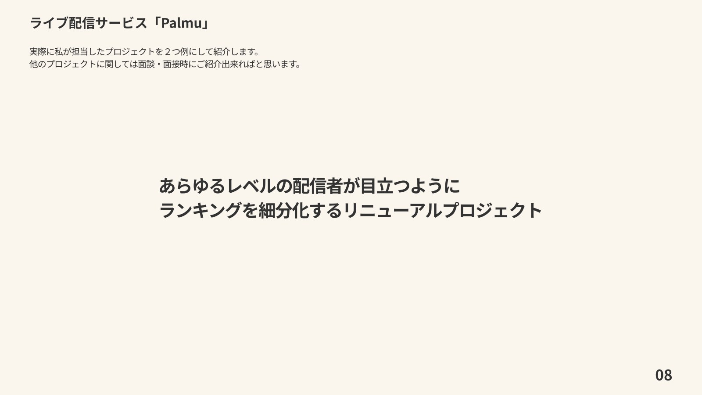
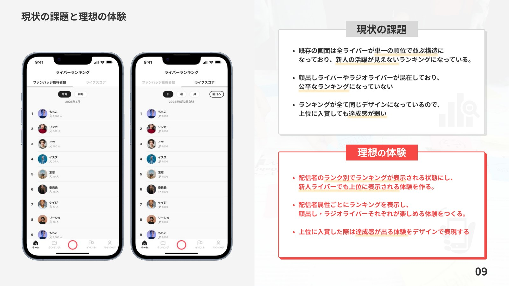
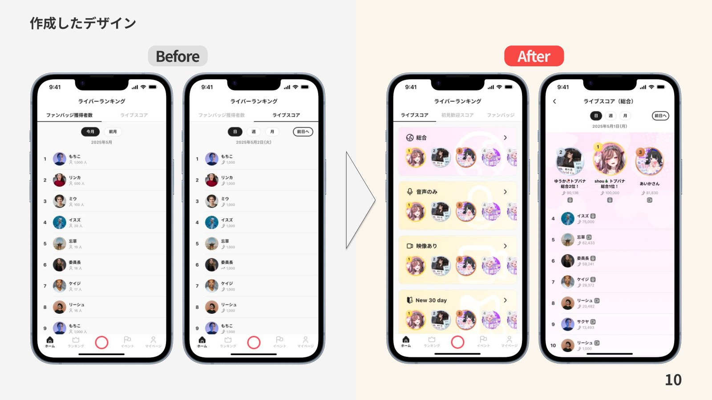
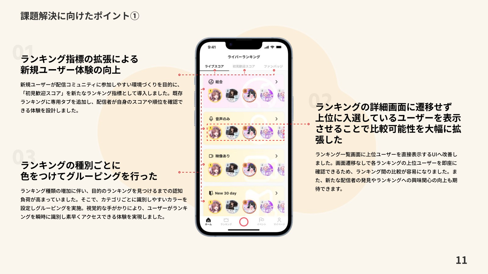
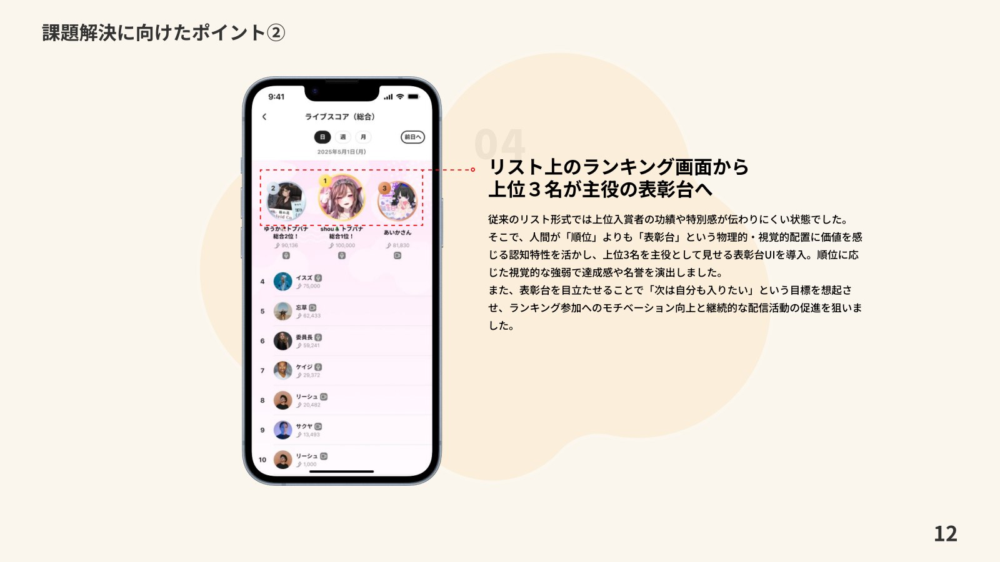
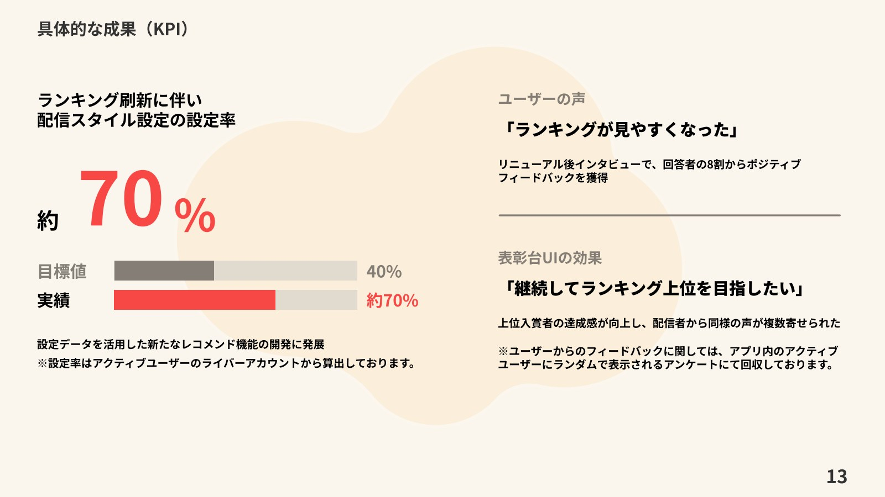

株式会社Lightでの制作実績
Palmu｜ランキング刷新プロジェクト
あらゆるレベルの配信者が活躍できるランキングへ刷新。ランク・配信者属性ごとの分類や色分け、上位入賞者の表彰台UIを設計しました。
担当：情報設計・UIデザイン・既存画面の改善
担当領域
新規機能の情報設計からUI作成、既存画面の改善まで幅広く担当。プロジェクトに応じてユーザーインタビューを実施し、ユーザーの声をプロダクトに反映しました。
ランキングのリニューアル
ランクや配信者属性ごとのランキング、カテゴリの色分け、上位3名を主役として見せる表彰台UIを設計。新人配信者も活躍が見え、上位入賞の達成感を得られる体験を目指しました。
成果
配信スタイルの設定率は目標40%に対して約70%を達成。アクティブなライバーアカウントを対象に算出しています。リニューアル後のアンケートでは、回答者の8割からポジティブなフィードバックが寄せられました。











